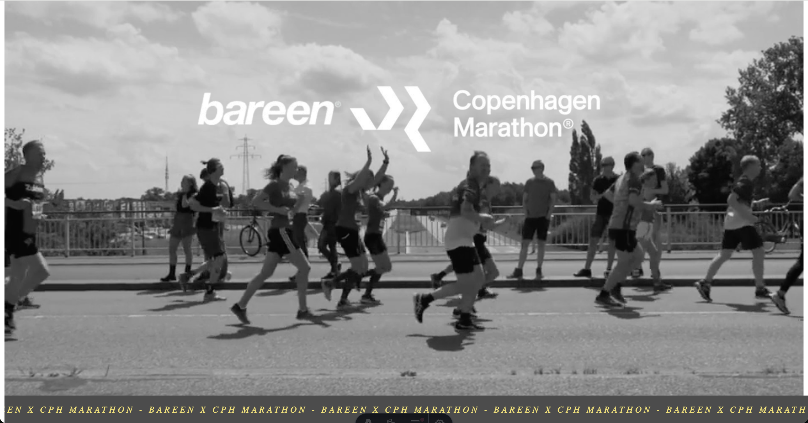
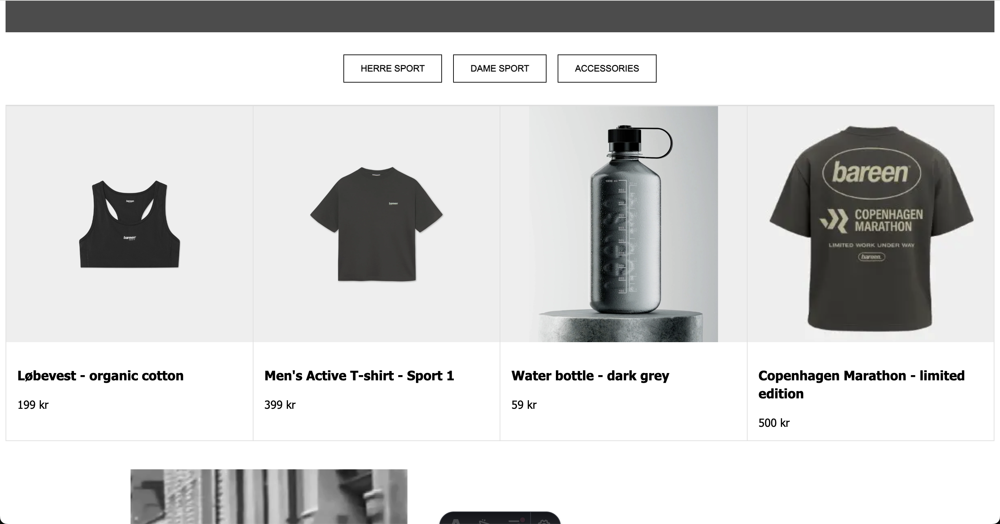
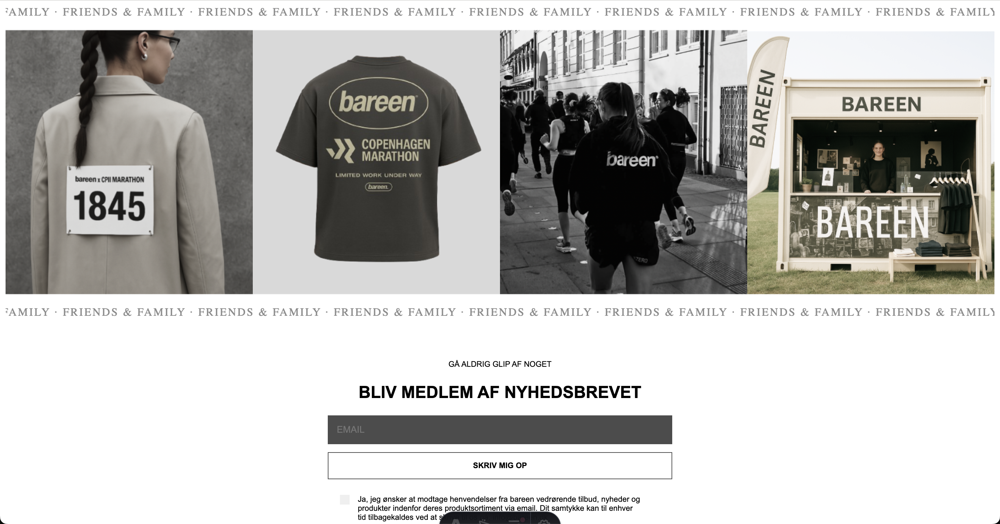

Concept - Bareen x Copenhagen Marathon




Mit navn er Aleksander, og jeg er 25 år gammel. Jeg er i gang med at tage
multimediedesign-uddannelsen på Erhvervsakademi København (EK), hvor jeg har valgt at fokusere på
frontend development. Min passion ligger ligeledes i at bygge flotte hjemmesider, hvor fokus ligger
på læselig, ordentlig kode, samt ux/ui.
Kodning og skole er ikke alt jeg foretager mig. Til
daglig nyder jeg at
holde mig aktiv med bl.a løb og styrketræning. Jeg nørder ud i fodboldverdenen, og er selv
aktiv spiller i en lokal klub på Nørrebro.
Jeg sætter pris på
et godt
netværk, og dyrker derfor også mine venskaber i høj grad.
Igennem mit 9 år gamle arbejdsliv har jeg konstant arbejdet som en del af et team. Jeg trives ligeledes i at være del af et team, og ønsker at få dybere indsigt i hvordan man proffessionelt arbejder sammen i denne branche, og hvilken rolle jeg kunne spille. Min drøm indenfor denne branche er at kode (og blive bedre til det) flotte, velfungerende hjemmesider (js) og gøre koden læsbar. Derudover håber jeg på at kunne tage del i at optimere brugeroplevelse og brugergrænseflade, da det er noget jeg selv er opmærksom på når jeg arbejder på hjemmesider, og når jeg kigger på andres hjemmesider.


+45 30 89 66 09

aljo0004@stud.ek.dk
Løvetandsvej 1, 2700 Brønshøj
HTML
Typescript
JavaScript
Dansk (modertunge)
Engelsk (flydende)
Tysk (Survivable)
GitHub
Astro
Tailwind CSS
Figma
Apple/MacOS
SEO
Office pakken
Adobe Illustrator
After Effects
Premiere Pro
Moderne browsere (Default: Chrome)